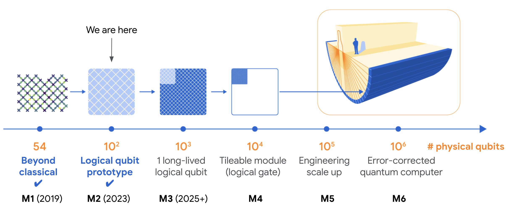
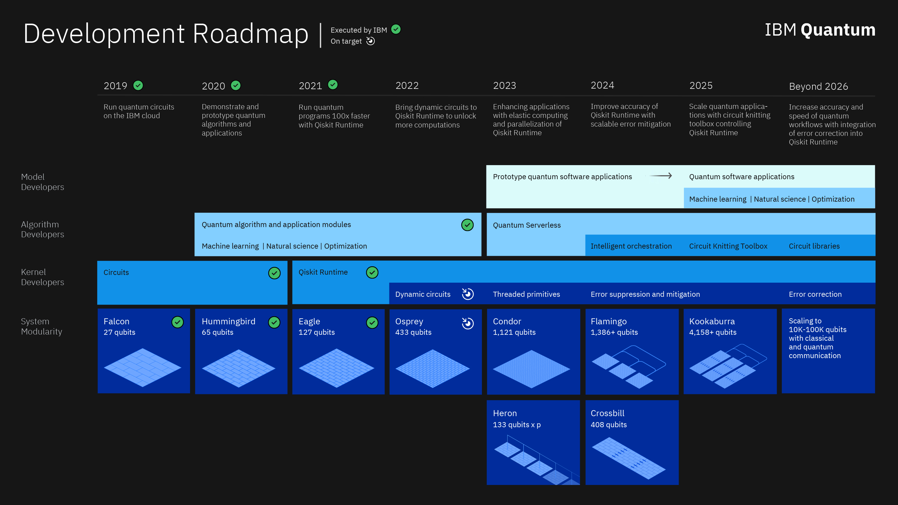
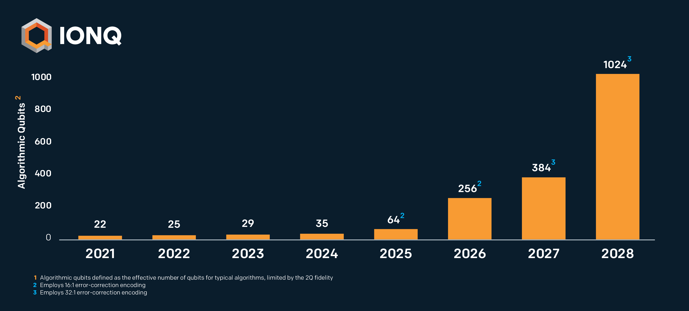

The Future
Many companies, including Google and IBM, predict that a quantum computer with qubits numbering in the thousands will be concieved in this decade.
Google's quantum roadmap. In a few years, they are expected to achieve 1000+ physical qubits.
IBM's quantum roadmap. This year they are expected to achieve 1000+ physical qubits with their new quantum computer "Condor".
A rough estimation shows IonQ achieving 4096+ physical qubits in the year 2025.